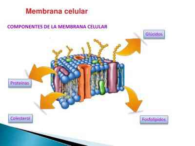

La membrana celular
Se puede denominar membrana plasmática. Es una estructura que dota a la célula de identidad, ya que la
diferencia del resto de sustancias que la rodean. Contiene en su interior todos los elementos que forman
la célula, la cual se puede definir como la unidad funcional de todo ser vivo.
Aunque la membrana tenga una función limitadora, a través de ella de dan gran cantidad de intercambios
de sustancias del interior al exterior y viceversa. Esto permite que exista una comunicación
intercelular.
Además, la membrana celular tiene más funciones, entre las que podemos destacar la función de
protección, permite el reconocimiento celular, ofrecer un lugar de anclaje para los componentes de la
matriz extracelular, permitir controlar la trayectoria de la motilidad celular, etc.
Esta parte celular se descubrió en 1895 por Overton. Este investigador dedujo a partir del
descubrimiento de que había sustancias que se podían introducir en la célula de forma más fácil que
otras, que debía haber una capa de lípidos que sirvieran como separación de la célula con el exterior,
la membrana.
Fosfolípidos
Son el tipo de lípidos que más abundan en las membranas plasmáticas. Se encuentran formando una bicapa. Mostrando una zona hidrófila, la cual constituye las denominadas cabezas polares (glicerina o gliceron en los fosfoglicéridos), que reaccionan de forma positiva al agua. Por otro lado, una parte hidrófoba (ácidos grasos), que forman lo que se denomina la cola apolar y rechazan el agua. Esta bicapa de fosfolípidos funciona como barrera entre interior y exterior de la célula. Estas características permiten decir que los fosfolípidos son anfipáticos.
Colesterol
Es un tipo de lípido que se encuentra entre las colas hidrofóbicas de los fosfolípidos de la membrana.
Esteroles
Son unos elementos que se forman a partir del colesterol y se encuentran de forma más abundante en las células eucariotas de los animales.
Glucolípidos
Se diferencian de los fosfolípidos en que estas sustancias contienen oligosacáridos, por lo demás son similares a las sustancias anteriormente definidas. Solo se encuentran en la parte externa de la membrana plasmática.
Glúcidos
Se denominan también carbohidratos y son el tercer tipo de sustancia más abundante en la membrana de la
célula. Son moléculas que se encuentran en la zona exterior de la membrana de forma mayoritaria. Si se
unen
a los lípidos, forman los glucolípidos anteriormente descritos. También pueden unirse a las proteínas,
formando glucoproteínas.
Los glúcidos que no se unen a otras moléculas tienen como función principal el transporte de otros
elementos
entre ambos lados de la célula. También son los encargados de reconocer la interacción entre las
células,
ayudando así al sistema inmunitario a diferenciar entre las células malignas para el cuerpo de las que
nos
debemos defender y las propias del cuerpo a las que se debe proteger.
Glucoproteínas
Son unas moléculas formadas por la unión de una proteína con uno o varios carbohidratos, tanto simples
como
compuestos. Se encuentran a lo largo de toda la membrana celular y en el exterior de ellas, pero nunca
en el
interior de la célula.
Funcionan como parte de la estructura celular, como protección, incrementando el tiempo de vida de las
proteínas y por último, reconocen a otras moléculas para juntarse o no a ellas.
Proteínas
Son el elemento más abundante en la membrana, después de los lípidos. Son moléculas que se colocan formando canales para permitir el traslado de sustancias. Existen diferentes tipos según el tipo de sustancias a las que permiten el paso. Los canales más importantes son los de sodio, potasio y calcio.